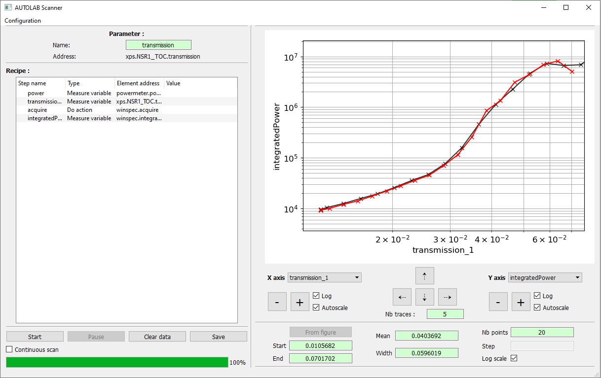

Scanning¶
The Autolab GUI Scanning interface allows the user to sweep a parameter over a certain range of values, and execute for each of them a custom recipe.
Scan configuration¶
Parameter¶
The first step to do is to configure the scan parameter. The parameter is a Variable which is writable (write function provided in the driver) and numerical (integer or float value). To set a Variable as scan parameter, right click on it on the control panel window, and select Set as scan parameter.
The user can change the name of the parameter with the line edit widget. This name will be used is the data files.
Parameter range¶
The second step is to configure the range of the values that will be applied to the parameter during the scan. The user can set the start value, the end value, the mean value, the range width, the number of points of the scan or the step between two values. The user can also space the points following a log scale by checking the Log check box.
Recipe¶
The third step is to configure the recipe, that will be executed for each value of the parameter. There are three kinds of recipe steps:
Measure the value of a Variable. Right click on the desired Variable in the control panel and select Measure in scan recipe to append this step to the recipe.
Set the value of a Variable. Right click on the desired Variable in the control panel and select Set value in scan recipe to append this step to the recipe. The variable must be numerical (integer, float or boolean value). To set the value, right click on the recipe step and click Set value. The user can also directly double click on the value to change it.
Execute an Action. Right click on the desired Action in the control panel and select Do in scan recipe to append this step to the recipe.
Each recipe step must have a unique name. To change the name of a recipe step, right click on it and select Rename, or directly double click on the name to change it. This name will be used in the data files.
The recipe steps can be dragged and dropped to modify their relative order. They can also be removed from the recipe using the right click menu Remove.
Store the configuration¶
Once the configuration of a scan is finished, the user can save it locally in a file for future use, by opening the menu Configuration and selecting Export current configuration. The user will be prompted for a file path in which the current scan configuration (parameter, parameter range, recipe) will be saved.
To load a previously exported scan configuration, open the menu Configuration and select Import configuration. The user will be prompted for the path of the configuration file.
Scan execution¶
Start button: start / stop the scan.
Pause button: pause / resume the scan.
Continuous scan check box: if checked, start automatically a new scan when the previous one is finished. The state of this check box can be changed at any time.
Clear data button: delete any previous datapoint recorded.
Save button: save the data of the last scan. The user will be prompted for a folder path, that will be used to save the data and a screenshot of the figure.
Note
The scan configuration cannot be modified or loaded when a scan is started. Stop it first.
Note
During a scan, the background color of each item (parameter or recipe step) indicates its current state. An orange item is being processed, a green one is finished.
Figure¶
The user can interact with the figure at any time (during a scan or not).
To zoom/unzoom the current view of the figure, use the buttons Zoom and Unzoom of each axis, or use the scroll wheel of the mouse. To move the current view of the figure, use the buttons Left, Right, Up and Down, or hold and drag the figure directly with the mouse.
After that a first loop of the scan has been processed, the user can select the Variable displayed in x and y axis of the figure. If the Variable of the x axis is the parameter, the user can use the button From figure to set the current x axis range of the figure, as the new parameter range.
Finally, the user can keep the previous curves of a scan by setting the Traces number.